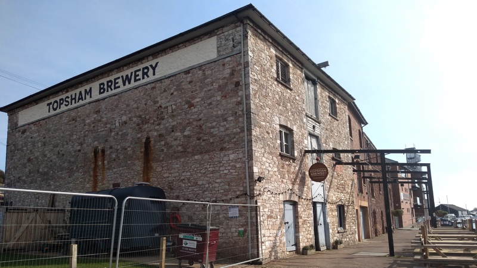
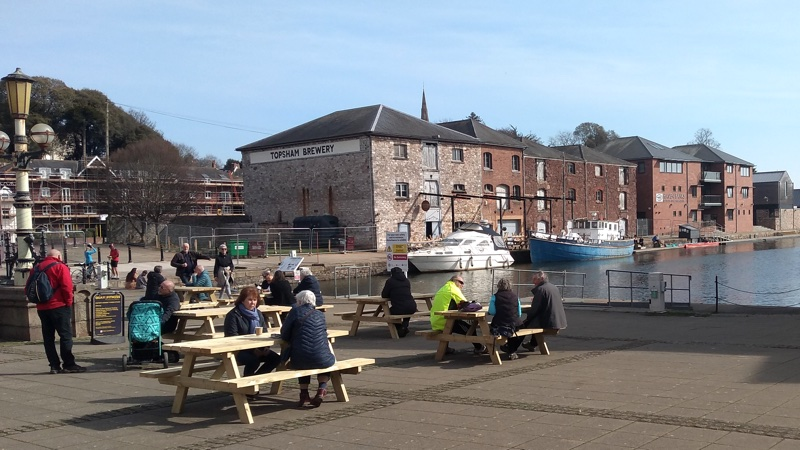

In 1981 Exeter City Council was faced with several decaying and under-used assets around its historic quay and canal basin which required capital investment to create a viable future. Severe central government controls on council spending made it impracticable to fund the work from the council’s own capital programme, so it set up the Exeter Canal and Quay Trust as a development and regeneration vehicle.
This approach allowed spending through the trust to remain off the council’s books. The challenge was that the trust had to generate funds before it could spend any.
40 years later, the trust can now point to a successful financial record. By 1995 it was making a surplus of £41,900 on a turnover of £84,900. By 2020 it was generating £328,200 as investment income, mostly from rents, while making a net loss on investments of £90,800. Its total funds that year amounted to £4.2 million.
The trust reached this position by focussing in the early years on extracting value from its property portfolio, including selling long leases or freeholds for some of its properties to build up capital. It sought investments with a good prospect of a return and avoided long-term commitments to financially unrealistic projects.
In turn it has been able to fund several improvement projects such as the Fish Quay and Antiques Centre and the suspension bridge over the river. From the 2000s it began to offer grants for relevant local projects, including to Devon Wildlife Trust for works at Cricklepit Mill. A current project is the development of a literature hub in Exeter Custom House.
The trust is a business, both a registered charity and a limited company, although eight of its twelve trustees are city councillors who change with considerable frequency. The chair, Alan Williamson, has been in post since the early 1990s.
To provide a framework for acceptable uses and development of the quay area, Exeter City Council produced a Canal Basin Masterplan which was adopted as a supplementary planning document in July 2004. This focussed on retaining the character of the area and important buildings. Crucially, it did not specify that future uses of buildings had to be waterway-related.
]) Maclaines Warehouses beside Exeter ship canal
Maclaines Warehouses are a group of prominent Grade II-listed buildings which stand at the heart of the canal basin between Exeter ship canal and the River Exe beside Piazza Terracina. Described by Historic England as a “typical mid-nineteenth century warehouse”, they are an important reminder of the role of the quay, canal and canal basin in Exeter’s historic past as a commercial maritime port.
The Canal Basin Masterplan stated that future uses of Maclaines Warehouses had to be compatible with “minimal intervention to the fabric of the building”. Ground floor uses “could include specialist retail, leisure or craft workshops. Upper floors included leisure, exhibition, office or craft workshop space.”
The masterplan has not been replaced and remains in force as a document to be taken into consideration when determining planning applications. There have been calls by waterways interests for it to be updated.
The city council’s current local plan core strategy also sets out development principles for the quay and canal basin. One is that development must “respect the historic character of the area and incorporate uses that realise the potential of existing high quality historic buildings”.
Exeter Civic Society (a charity of which the author is a member) had been monitoring developments on the quayside and canal for many years when, in January 2014, it stepped up its interest by establishing a River, Canal and Quayside sub-committee. The committee’s remit is “to preserve and enhance the character of the river, canal and quayside and examine and comment on matters affecting them”.
Led by Peter Nickol, the committee published its own prospectus A Future for Exeter’s River, Canal and Quayside in August 2015. Intended to influence Exeter City Council’s own review of the waterways, it said: “At the core of the civic society’s thinking is the recognition that decisions affecting the waterways and their environs, whether or not based on current interests and activities, will endanger the distinctive qualities of the area unless there is a considered set of strategic goals.”
In relation to the quay and the canal basin area, the report said: “One of its qualities is that it is relaxed and not crassly and commercially over-exploited. We want to see this quality preserved while its distinctive heritage, tourist, arts and educational potential is sensitively developed.”
In 2016 a small group of people, with support from the civic society, established the Friends of the Exeter Ship Canal (an unincorporated association of which the author is also a member). As a free-standing body, with aims relating solely to the canal, it has been able to develop a close relationship with the Inland Waterways Association and organise practical maintenance work on the canal.
Although the Friends’ remit extends to the whole length of the canal, it pays special attention to developments in the canal basin. Helmed by its chair John Monks since inception, the organisation produced a prospectus of improvements in April 2018, Exeter Ship Canal - Issues and Opportunities, which it believed were necessary if the canal – and particularly the canal basin – was to become more than an environment shaped by the demands of investment finance.
The prospectus calls for better promotion of the canal, new slipways, residential moorings, canal holidays and development of heritage and maritime activities in the canal basin.
The Friends’ overall position is set out in the second paragraph of the prospectus: “Income generation and improvements go hand in hand; but we feel their value will be limited unless policies are simultaneously developed to address the constraints that affect the canal’s use and therefore its income potential in the future.”
The Boat Shed pop-up paper
Maclaines Warehouses also stand at the heart of differences over the role of the quay, canal and canal basin in Exeter’s future, between the Friends of the Exeter Ship Canal and their supporters on the one hand and Exeter City Council and Exeter Canal and Quay Trust on the other .
The buildings have not had long-term tenants since Exeter’s Maritime Museum closed in 1997 after nearly thirty years occupancy. In 2013 the owner of the Bike Shed Theatre and bar in Fore Street, David Lockwood, identified Maclaines Warehouses as a potential new theatre, arts and crafts venue and maritime heritage centre complex.
He ran a “pop-up” trial between May and September 2017 to test the water which included music and theatre, art and crafts, an ice cream parlour and cocktail bar, al fresco dining and even indoor mini-golf. There was considerable enthusiasm for the project’s vision of an Exeter waterway agora: the pop-up was funded by donations from 500 local people. This author remembers the place hosting a particularly enjoyable hustings during the June 2017 general election campaign.
Exeter Canal and Quay Trust was more sceptical. David Lockwood’s business plan was, in its view, too reliant on funding from grants to become a going concern. The Bike Shed Theatre subsequently closed, David Lockwood moved away and no more was heard of the Boat Shed plan.
Since late 2018 two of the building’s four units, each of which have ground and upper floors, have been occupied by Topsham Brewery. It provides a bar on the ground floor of unit 1 and uses the ground floor of unit 2 as a brewery. The company obtained planning permission from the city council in August 2020 to use the first floor for another bar and events area and the second floor as a brewery office.
The trust appeared keen on Topsham Brewery. Yet it also needed a stable occupant for units 3 and 4. The lease was advertised and the preferred applicant was Forward Space, the brainchild of Gavin Eddy, a former investment banker. Forward Space specialises in creating co-working and shared workspace in regional towns and cities by re-developing historic and other buildings.
Forward Space applied for planning permission to convert units 3 and 4 in December 2019. Central to the company’s proposals is the creation of an open plan co-working space and a combined cafe/event space at ground floor with two floors of dedicated office spaces for local small businesses above.
The Friends of the Exeter Ship Canal and Exeter Civic Society formally objected to both planning applications, stressing the importance of using the buildings for maritime-related activity as part of an overall plan for the quay, canal and canal basin. While neither organisation appears to recognise the long-standing links between boat crews and canal-side taverns, it is beyond argument that the Forward Space proposal is not a maritime-related use.
The Friends of the Exeter Ship Canal were particularly active in setting out the case against the Forward Space proposals. In a statement entitled Maclaines Warehouses – The Future sent to Exeter Canal and Quay Trust in June last year, John Monks asked the trust to pause the process of agreeing to lease units 3 and 4 to Forward Space so that interested parties could collaborate in developing a road map based on identified waterway-related uses. The statement drew particular attention to a likely post-pandemic fall in demand for office space.
The trust responded by stating, in effect, that it was too late to change course now. It said it had been very difficult to find anyone interested in taking on the building who had a viable business plan and said it would be “highly inappropriate to renege on its original commitment” given to Forward Space.
In July last year John Monks wrote on behalf of the Friends of the Exeter Ship Canal to the chair of Exeter Canal and Quay Trust, the leader of the city council and the city council’s chief executive. The letter restated the importance of securing a maritime-related use for units 3 and 4, argued that post-pandemic uncertainties about the need for office space made the Forward Space proposal financially risky, observed that Gavin Eddy had made very slow progress with a similar project in Taunton and noted that all relevant decisions by the council and trust had been taken behind closed doors.
The city surveyor replied, reiterating the trust/council position. Meanwhile Gavin Eddy told us he sees the changes in working practices caused by the pandemic as strengthening his business model, not the reverse, because he is not offering conventional fixed offices but flexible working, a view which was supported in the city surveyor’s letter.
Gavin Eddy also explained the reasons for the delay in the Taunton project, which he said stemmed largely from lack of promised funding from public authorities, and told us that the Taunton facility is on track to open in September. According to Mr Eddy, the Exeter facility will be complete by the end of 2021 with an official launch at the very beginning of 2022.
In August last year Forward Space received planning permission to convert Maclaines Warehouses. The decision was delegated to city council planning officers, rather than being taken by elected councillors at the city’s planning committee, and dealt with alongside another decision concerning Topsham Brewery with the same agent acting for both.
At the time of writing, the future of Maclaines Warehouses is not yet cast in stone. Alan Williamson of Exeter Canal and Quay Trust told us that settling the leases had been “legally complicated” though he was hopeful that matters would be completed within the next few weeks. Gavin Eddy said he hoped conversion work would start on site in July.
Exeter Rowing Club and Exeter Canoe Club currently occupy the ground floor of units 3 and 4 under a lease which would require them to vacate at short notice. Alan Williamson confirmed both clubs were being kept informed of progress.
 Maclaines Warehouses beside Exeter ship canal viewed from Piazza Terracina
In November 2020 the Friends of the Exeter Ship Canal, supported by the Inland Waterways Association, published a new vision and action plan for a reinvigorated canal, Making the Canal Matter Again to Exeter. It was issued in parallel with the award of Heritage Harbour status to the port of Exeter, the first such award in the south west.
The award was warmly welcomed by Exeter City Council, which supported the Friends of the Exeter Ship Canal application for the designation. The Heritage Harbour status offers the potential for a reset in relationships between the various stakeholders. John Monks of Friends of the Exeter Ship Canal told us:
“The city council and trust are both enthusiastic about the Heritage Harbour designation the Friends achieved for the canal and basin as integral parts of the Port of Exeter.
“To get the most from it depends on their seeing it not so much as a flag of status but as a stimulus to work together on creating the maritime heritage revival that is at the heart of every heritage harbour.
“We have proposed that there should be a road map drawn up independently to help align all the various aspirational aims and objectives that may now come along with common objectives for the waterways’ maritime future. We have asked the trust for £5,000 of funding to allow the Friends to commission it.
“Without the shared sense of direction the road map will provide, and if there is no involvement of the wider waterways community that makes up the port, interest in the Heritage Harbour itself will soon dry up.”
Meanwhile, the Exeter Canal and Quay Trust has been developing a new vision, which is to be issued next month. It has identified three draft priorities:
“In collaboration with partners, to promote the quay area and its businesses as a vibrant destination for residents and visitors.
“To develop the custom house as Exeter Canal and Quay Trust’s flagship public building for the benefit of people in Exeter, Devon and beyond.
“To ensure that Exeter Canal and Quay Trust’s property portfolio remains in beneficial and sustainable occupancy.”
However sensible these priorities may be, there is little in them to suggest active support for a vision which anchors Exeter’s quay, canal and canal basin in its historic maritime past.